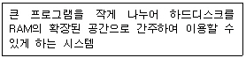
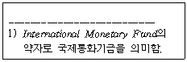
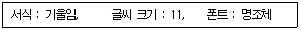
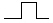
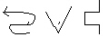
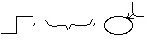
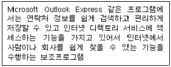
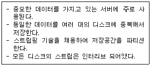
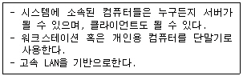
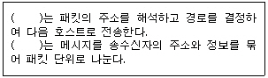

워드프로세서-(구-1급) (2001-04-08 기출문제)
1과목: 워드프로세싱 일반
1. 다음은 무엇을 설명하고 있는가?

- 가상메모리
- 캐시 칩(Cache Chip)
- 디스크 캐시(Disk Cache)
- 레지스터(Register)
(정답률: 63%)

2. 다음 중에서 빛을 이용한 입력장치들로만 짝지어진 것은?
- OCR, MICR, 바코드판독기
- 스캐너, 라이트펜, OMR
- LCD, OMR, OCR
- 마우스, 스캐너, MICR
(정답률: 56%)
3. 다음 중 CRT(Cathode Ray Tube)의 설명으로 옳지 않은 것은?
- CRT의 종류는 단색과 칼라가 있다.
- 화면의 크기는 대각선 길이를 인치(Inch)로 표현한다.
- 해상도는 화소(Pixel)에 의해 결정되며 화소가 많을수록 선명하다.
- 랩탑(Laptop)컴퓨터나 워드프로세서 전용기에 많이 사용된다.
(정답률: 47%)
4. 다음 중 KS X 1001 한글 코드에 대한 설명으로 옳지 않은 것은?
- 조합형 코드는 한글 11,172자를 표현할 수 있다.
- 완성형 코드에서 한글을 표현할 때 16비트를 사용한다.
- 전세계에서 사용하는 모든 문자의 표현이 가능하도록 만든 국제표준코드이다.
- 정보교환용 코드체계이다.
(정답률: 48%)
5. 다음 문장과 관련이 없는 사항은?

- 색인
- 내어쓰기
- 각주
- 기울임(이태릭체)
(정답률: 55%)
6. 문서 작성기로 가족 신문을 만들기 위해 한쪽을 둘로 나누어 왼쪽과 오른쪽에 각기 다른 내용을 기록하고자 한다. 가장 적절한 기능은?
- 선그리기
- 편지 병합(Mail Merge)
- 갈무리 기능
- 단 혹은 다단
(정답률: 66%)
7. 다음 중 외곽선 정보를 사용하며 높은 압축율을 통해 파일의 용량을 줄인 글꼴은?
- 백터(Vector)방식
- 오픈타입(Opentype)
- 트루타입(Truetype)
- 비트맵(Bitmap)
(정답률: 45%)
8. 개체를 연결(Link)하면서 삽입하는 경우에 대한 설명으로 옳지 않은 것은?
- 원본 개체의 내용이 바뀌는 경우 이를 연결하고 있는 문서의 내용도 바뀐다.
- 원본 개체에 대한 정보만을 갖고 있으므로 문서의 크기가 대체로 작다.
- 원본 개체를 삭제하여도 문서에 남아 있는 삽입된 개체를 수정 편집할 수 있다.
- 문서 내에서 원본 개체를 더블클릭하면 작성한 프로그램으로 편집할 수 있다.
(정답률: 40%)
9. 이미 작성된 문서 전체에 대해서 한 줄 건너 매 줄의 내용을 다음과 같은 서식으로 바꾸고자 한다. 이러한 반복적인 작업을 수행하는데 가장 효율적인 기능은?

- 스타일(Style)
- 매크로(Macro)
- 상용구(Glossary)
- 바꾸기(Replace)
(정답률: 38%)
10. 다음의 단위 중 프린터와 관계가 없는 용어는?
- TPI(Track Per Inch)
- CPS(Character Per Second)
- DPI(Dot Per Inch)
- PPM(Page Per Minute)
(정답률: 50%)
11. 다음 중 영어를 입력할 때 글자의 모양에 따라 이웃한 두 글자 사이의 간격을 늘리거나 줄이도록 정해놓은 것을 의미하는 용어는?
- 피치(Pitch)
- 여백(Margin)
- 커닝(Kerning)
- 정렬(Align)
(정답률: 57%)
12. 다음 중 탭(Tab)의 설명으로 옳지 않은 것은?
- Tab 키가 사용된다.
- 탭간격을 일정하게 유지할 수 있다.
- 탭의 종류도 선택할 수 있다.
- 탭으로 들여쓰기/내어쓰기도 설정할 수 있다.
(정답률: 52%)
13. 다음의 교정부호 중 단어나 글자의 위치 변경과 관계 없는 것은?

(정답률: 64%)
14. 다음 중 문서의 분량이 증가할 가능성이 있는 교정부호의 집합은?


(정답률: 60%)
15. 다음 중 문서등록대장에 등록할 시 문서번호를 부여하는 순서는?
- 결재일자순
- 기안일자순
- 발송일자순
- 임의로 하여도 상관없다.
(정답률: 41%)
16. 다음 중 문서작성시 내용을 여러 가지 항목으로 구분할 때 넷째 항목의 구분방법은?
- ㉮, ㉯, ㉰, …
- 가, 나, 다, …
- (가), (나), (다), …
- 가), 나), 다) …
(정답률: 51%)
17. 다음 중 문서의 보존기간에 포함되기 시작하는 날은?
- 문서 완결한 날의 다음해 1월 1일
- 문서 기안한 해의 1월 1일
- 문서 시행일
- 문서 기안일
(정답률: 52%)
18. 다음 중 CD-ROM과 같은 전자출판물의 단점이 아닌 것은?
- 전원이 공급되지 않으면 전자출판물의 내용을 볼 수 없다.
- 수록된 자료는 전기적 변환이 쉬우나 다른 전자매체와 결합이 어렵다.
- 종이 출판물에 비해 전체적인 내용 비교가 어렵다.
- 수록된 내용을 보기 위해서는 컴퓨터에 대한 기본지식을 갖추어야 한다.
(정답률: 33%)
19. 다음 중 On-Line 전자출판이 기존 종이 출판에 비해 갖는 특징과 거리가 먼 것은?
- 출판 내용에 대해 추가 및 수정과 배포가 신속하다.
- 사용자가 필요로 하는 부분만을 검색하고 인쇄할 수 있다.
- 종이 출판에 비해 비용이 많이 든다.
- 출판물을 보관하기 위한 공간이 줄어든다.
(정답률: 57%)
20. 다음 중 전자출판에서 제한된 색상을 이용하여 복잡한 색을 구현해 내는 기법은?
- 커닝(Kerning)
- 오버프린트(Overprint)
- 리터칭(Retouching)
- 디더링(Dithering)
(정답률: 53%)
2과목: PC 운영 체제
21. 다음 중 한글 Windows 98에서 프린터 설치에 대한 설명으로 옳지 않은 것은?
- [프린터] 폴더의 [프린터 추가] 아이콘을 실행하여 [프린터 추가 마법사]가 나타나면 순서에 따라 프린터를 추가한다.
- 프린터는 10개까지 설치할 수 있고 처음 설치한 프린터가 기본 값으로 기본 프린터가 된다.
- 기본 프린터의 변경은 프린터 아이콘을 선택한 후 [파일]-[기본 프린터로 설정] 항목을 선택한다.
- 컴퓨터가 네트워크에 연결되어 있지 않을 때에는 프린터 종류를 ‘로컬 프린터’로 설정한다.
(정답률: 49%)
22. 한글 Windows 98의 [케이블 직접 연결] 프로그램은 노트북 컴퓨터와 데스크탑 컴퓨터를 번갈아 사용하는 일이 많은 경우에 매우 편리하게 활용할 수 있는 기능이다. 이 DCC(Direct Cable Connection) 기능에 대한 설명으로 옳지 않은 것은?
- 직렬포트, 병렬포트 및 적외선 포트 모두를 DCC에 활용할 수 있다.
- 직렬포트보다는 병렬포트를 통해 연결하는 것 이 더 빠르다.
- 한 컴퓨터는 호스트로 지정하고 다른 컴퓨터는 게스트로 지정해야 한다.
- 호스트 컴퓨터는 게스트 컴퓨터의 모든 자원을 내 것처럼 사용할 수 있게 된다.
(정답률: 36%)
23. 한글 Windows 98의 휴지통에 관한 설명으로 옳지 않은 것은?
- 휴지통과 관련된 폴더의 이름은 ‘Recycled’이다.
- 바탕 화면의 휴지통 아이콘을 삭제하려고 하는 파일의 아이콘 위로 드래그 하면 삭제된다.
- 삭제된 파일은 휴지통에 일시 저장되며, 다시 필요하면 복구할 수 있다.
- 휴지통의 등록 정보를 이용하면 휴지통과 관련된 저장 디스크 드라이브와 전체 크기를 재 설정할 수 있다.
(정답률: 42%)
24. 한글 Windows 98의 탐색기에서 여러개의 그림파일이 있는 폴더에 대하여 파일명이나 모든 그림 파일의 내용을 실제로 보면서 작업할 수 있도록 하려면?
- 지정한 폴더의 [등록정보]에서 [멀리보기 사용] 지정 후 [보기] 메뉴의 [멀리보기] 선택
- 지정한 폴더의 [등록정보]에서 [멀리보기 사용] 지정 후 [보기] 메뉴의 [그림보기] 선택
- 지정한 폴더의 [등록정보]에서 [그림보기 사용] 지정후 [보기] 메뉴의 [그림보기] 선택
- 지정한 폴더의 [등록정보]에서 [그림보기 사용] 지정 후 [보기] 메뉴의 [멀리보기] 선택
(정답률: 28%)
25. 한글 Windows 98의 탐색기에서 상태표시줄은 현재 상태에 대한 정보를 보여준다. 이곳에 나타나는 정보로 옳지 않은 것은?
- 드라이브, 폴더의 이름
- 폴더에 있는 하위폴더 또는 파일의 수
- 폴더에 있는 파일 총 크기
- 사용할 수 있는 디스크 공간
(정답률: 33%)
26. 한글 Windows 98에서 디스크에 기록하고 지우는 과정으로 인해 디스크의 가용 공간이 이곳 저곳 흩어지는 디스크 단편화가 일어나는데 이것을 제거하여 디스크의 입·출력속도를 향상시킬 때 사용하는 프로그램은?
- 디스크 검사
- 디스크 포맷
- 디스크 조각 모음
- 바이러스 검사
(정답률: 58%)
27. 한글 Windows 98에서 컴퓨터에 설치되어 있는 모든 하드웨어의 등록정보를 보려면?
- [시작]-[설정]-[제어판]-[새 하드웨어 추가]
- [시작]-[설정]-[제어판]-[시스템]-[하드웨어 초기화 파일]
- [시작]-[설정]-[제어판]-[시스템]-[장치관리자]
- [시작]-[설정]-[제어판]-[프로그램 추가/제거]
(정답률: 51%)
28. 다음은 한글 Windows 98 사용에 대한 설명이다. 잘못된 것은?
- Ctrl키를 누른 채 다른 창으로 파일 끌기를 하면 파일을 복사할 수 있다.
- Print Screen 키를 누르면 바탕화면 전체가 클립보드로 복사된다.
- 여러 창을 화면에 만들었을 때 Alt 키를 누른채 Tab키를 누르면 다른 창으로 전환된다.
- F5키를 누르면 선택한 파일, 폴더 등의 이름을 바꿀 수 있다.
(정답률: 55%)
29. 한글 Windows 98에서 [시작]-[찾기]-[파일 또는 폴더]로 파일을 찾는 방법 중 가능하지 않은 것은?
- 특정 기간 동안 변경된 파일을 모두 찾기
- 일정 횟수 이상 변경된 파일을 모두 찾기
- 일정 크기 이상의 파일을 모두 찾기
- 특정 문자열이 내용 중에 포함된 텍스트 파일을 모두 찾기
(정답률: 44%)
30. 다음 중 한글 Windows 98에서 연결 프로그램에 대한 설명으로 옳지 않은 것은?
- 파일의 확장자에 의해 연결 프로그램이 결정된다.
- 연결 프로그램이 지정되어 있는 파일에 대해 열기를 선택하면 자동으로 해당 연결 프로그램이 실행된다.
- 연결 프로그램이 지정되어 있지 않은 확장자를 갖는 파일을 열기 위해서는 시스템에 어떤 응용 프로그램을 사용할 것인가를 알려주어야 한다.
- 서로 다른 확장자를 갖는 파일은 반드시 서로 다른 연결 프로그램이 지정되어야 한다.
(정답률: 46%)
31. 한글 Windows 98에서 프린터를 사용하여 문서를 인쇄할 때의 설명으로 옳지 않은 것은?
- 인쇄 대기중인 문서의 목록을 확인할 수 있으며, 인쇄를 취소할 수도 있다.
- 문서를 인쇄하는 동안 작업 표시줄에 프린터 아이콘이 표시되며, 인쇄가 끝나면 이 아이콘이 없어진다.
- 프린터 아이콘은 바탕화면에 단축 아이콘(바로가기)으로 만들 수 없다.
- 네트워크 프린터를 설치하고 나면 다른 컴퓨터에 연결된 프린터를 내 컴퓨터에 연결된 프린터처럼 사용할 수 있다.
(정답률: 46%)
32. 다음 설명과 같은 기능을 하는 보조프로그램은 무엇인가?

- 주소록
- 전화걸기
- Netmeeting
- 인터넷 연결마법사
(정답률: 49%)
33. 다음 한글 Windows 98 기능에 대한 설명 중 옳은 것은?
- [예약된 작업]에 시스템 도구 관련 프로그램을 추가하면 자동으로 실행이 된다. 하지만, 여기에는 [시스템 관리 마법사]를 추가할 수는 없다.
- [디스크 공간늘림]을 실행하려면 전체 용량의 50% 이상의 여유공간이 반드시 있어야 한다.
- [디스크 정리]의 [기타옵션] 탭에서 드라이브 변환기(FAT32)는 FAT32로 디스크를 변환하여 디스크의 여유공간을 확장하는 기능을 한다.
- [네트워크 감독]에서는 공유 폴터를 추가하거나 컴퓨터나 특정 파일에 연결된 사용자의 정보를 볼 수는 있지만, 사용자의 연결을 끊을 수는 없다.
(정답률: 37%)
34. 한글 Windows 98에서 [시작] - [프로그램] - [보조프로그램] - [시스템 도구] - [시스템 정보]에 관한 설명으로 옳지 않은 것은?
- 시스템 구성정보를 수집하여 연관된 시스템 항목을 표시할 수 있는 메뉴를 제공한다.
- 하드웨어 리소스에는 DMA, IRQs, I/O 주소 및 메모리 주소를 보여준다.
- 구성요소는 Windows구성에 관련된 정보를 표시한다.
- 소프트웨어 환경은 컴퓨터에 설치된 모든 소프트웨어의 스냅샷(Snapshot)을 표시한다.
(정답률: 46%)
35. 한글 Windwos 98에서의 문제 해결방법에 관한 설명 중 가장 거리가 먼 것은?
- [메모리 부족]일 경우에는 가상 메모리를 충분히 확보할 수 있도록 휴지통, 임시파일, 사용하지 않는 프로그램 등을 삭제한다.
- [디스크 공간 부족]일 경우에는 열려진 프로그램이나 문서 중 불필요한 것을 종료한다.
- [부팅이 안되는 경우]에는 안전모드로 부팅하여 문제 해결후 정상모드로 재부팅한다.
- [시스템 속도 문제]일 경우에는 디스크 조각 모음을 하여 하드 디스크의 단편화를 제거한다.
(정답률: 41%)
36. 한글 Windows 98의 [시스템 모니터]에 관한 설명으로 옳지 않은 것은?
- 각 작업을 1초에서 1시간 간격으로 점검하여 업데이트되므로 Windows의 속도가 향상된다.
- 메모리, 시스템 지원, CPU, 가상 메모리, 네트워크 성능 등의 시스템 사용 현황을 파악할 수 있다.
- [시작]-[프로그램]-[보조프로그램]-[시스템도구]- [시스템 모니터]를 선택한다.
- 시스템 모니터는 선 그래프, 막대 그래프, 수치 그래프 등 세 가지 형태로 볼 수 있다.
(정답률: 37%)
37. 다음 중 컴퓨터에 설치된 네트워크 클라이언트, 어댑터, 프로토콜, 서비스 등의 목록들에 대한 설명으로 옳지 않은 것은?
- 네트워크 클라이언트를 이용하여 다른 네트워크 컴퓨터의 공유 파일 등을 이용할 수 있다.
- 어댑터는 사용자의 컴퓨터를 네트워크에 논리적으로 연결하는 에뮬레이터이다.
- 프로토콜은 통신을 하기 위한 기본 규약을 말한다.
- 서비스는 파일과 프린터를 공유할 수 있도록 한다.
(정답률: 40%)
38. 전자 우편에서는 송신자의 인증과 부인 봉쇄 기능을 위하여 전자 서명을 이용한다. 다음 중 옳지 않은 것은?(문제오류로 실제 시험장에서는 2, 3번을 정답 처리한 문제 입니다 여기서는 2번을 정답처리 합니다.)
- 메시지를 받는 사람이 메시지를 변조하거나 위조할 수 없도록 한다.
- 특정인을 확인하기 위하여 비밀키(Private Key) 암호 방식을 취하고 있다.
- 한글 Windows 98에서 제공하는 아웃룩 익스프레스(Outlook Express)에는 전자 서명의 기능이 없으므로 부가적인 소프트웨어를 사용해야 한다.
- 메시지를 보낸 사람이 추후에 부인할 수 없으며 전자 상거래에 활용이 가능하다.
(정답률: 55%)
39. 다음 중 네트워크에 관련된 용어에 대한 설명으로 옳지 않은 것은?
- BPS는 Bits Per Second의 약자로 전송 속도를 나타낼 때 사용한다.
- RTP는 Real-Time Transport Protocol의 약자로 실시간 멀티미디어 데이터 전송을 위한 프로토콜을 의미한다.
- SNMP는 TCP/IP 네트워크를 관리하는데 사용되는 프로토콜을 지칭한다.
- QoS는 네트워크에서 보안성을 제공하기 위한 서비스를 의미한다.
(정답률: 35%)
40. 다음 중 문서 편집기인 메모장에서 사용 가능한 기능에 대한 설명으로 옳지 않은 것은?
- 글자색상 지정과 글꼴의 크기 설정
- 머리글 바닥글 작성
- 시스템의 날짜와 시간을 [편집]메뉴에서 바로 입력
- 출력용지 및 여백 설정
(정답률: 39%)
3과목: 컴퓨터 및 정보활용
41. 한 글자를 저장하는데 1 byte, 한 페이지에 2,000글자가 있고, 책 한권이 500 페이지라면 1GB의 기억장치는 대략 몇권의 책의 내용을 저장할 수 있는가?
- 100권
- 500권
- 1,000권
- 2,000권
(정답률: 50%)
42. 다음 중 문자를 표현하는 코드체계가 아닌 것은?
- Hamming Code
- ASCII
- EBCDIC
- KS X 10⑤-1
(정답률: 45%)
43. 다음 중 시스템의 안정성을 고려하여 한쪽의 CPU가 가동중일 때, 다른 한 CPU가 고장이 나면 즉시 대기중인 CPU가 작동되도록 운영하는 방식은?
- 다중 처리 시스템
- 듀얼 시스템(Dual System)
- 분산 처리 시스템
- 듀플렉스 시스템(Duplex System)
(정답률: 31%)
44. 다음 중 캐시 메모리에 대한 설명으로 옳지 않은 것은?
- CPU와 메모리 사이에 위치한 고속 메모리로 CPU의 효율을 높여준다.
- 외부캐시메모리는 DRAM으로 만들어진다.
- 펜티엄 프로세서에는 명령어와 데이터를 처리하기 위한 내부캐시메모리가 있다.
- 캐시메모리에는 바로 사용될 명령어와 데이터가 임시로 저장된다.
(정답률: 44%)
45. 다음은 무엇에 대한 설명인가?

- DVD
- RAID
- Juke Box
- Jaz Drive
(정답률: 48%)
46. 기존 응용 프로그램의 오류 수정이나 성능 향상을 위해 프로그램의 일부 파일을 변경해 주는 프로그램을 무엇이라고 하는가?
- 패치 프로그램(Patch Program)
- 링킹 프로그램(Linking Program)
- 응용 프로그램(Application Program)
- 채팅 프로그램(Chatting Program)
(정답률: 54%)
47. 프로세서와 입.출력 장치사이의 데이터를 주고받을 때 생기는 전송 속도 차이를 보완하기 위해 프로세서에서 처리될 데이터를 주기억장치의 일부를 이용하여 임시로 저장하는 기법을 무엇이라 하는가?
- Spooling
- Multitasking
- Buffering
- Mirroring
(정답률: 39%)
48. 스캐너를 이용하여 받아들인 이미지 형태의 문서를 이미지 분석과정을 통하여 문자 형태의 문서를 바꾸어 주는 소프트웨어를 무엇이라 하는가?
- OMR 소프트웨어
- Retouching소프트웨어
- 이미지 편집 소프트웨어
- OCR 소프트웨어
(정답률: 33%)
49. 다음 중 BIOS에 대한 설명으로 옳지 않은 것은?
- 컴퓨터를 켜면 BIOS에 저장된 Boot 프로그램이 시작되어 POST(Power on Self Test)를 행한다.
- 부팅 순서를 바꾸려면 BIOS설정을 변경해 주어야 한다.
- 시스템 부팅 시 입력해야 하는 암호를 잊어버리면 ROM BIOS를 교체해 주어야 한다.
- BIOS 설정을 통해 시간과 날짜를 변경할 수 있다.
(정답률: 42%)
50. 인터넷 상에서 시스템 보안문제는 중요한 부분이다. 따라서 보안이 필요한 네트워크의 통로를 단일화하여 이 출입구를 관리함으로써 외부로부터의 불법적인 접근을 많은 부분 막을 수 있다. 이러한 시스템을 무엇이라 하는가?
- 방화벽(Firewall)
- 해킹(Hacking)
- 펌웨어(Firmware)
- 데이터 디들링(Data Diddling)
(정답률: 63%)
51. 한글 Windows 응용 프로그램 실행 중 디스크 공간 부족이라는 메시지가 나왔다. 이 문제를 해결하는 방안으로 가장 거리가 먼 것은?
- [디스크 정리]를 통해서 자동으로 다운로드한 ActiveX 컨트롤, Java 애플릿을 삭제한다.
- 휴지통에 있는 파일을 삭제한다.
- [디스크 공간늘림]을 실행해서 데이터 압축을 통해서 공간을 확보한다.
- [디스크 조각모음]을 실행시켜 디스크에 흩어져 있는 조각들을 모아준다.
(정답률: 37%)
52. 요즘의 웹브라우저에서 사운드, 비디오와 같은 멀티미디어 요소들을 다운로드 받으면서 재생해주는 기술을 무엇이라 하는가?
- Striping
- Streaming
- Caching
- Watermarking
(정답률: 53%)
53. 다음 중 그래픽 파일 형식에 대한 설명으로 옳지 않은 것은?
- GIF 형식은 Animation을 표현할 수 있다.
- JPG 형식은 GIF 형식보다 다양한 색상을 나타낼 수 있다.
- JPG 형식은 인터넷 상에서 그림을 전송할 때 많이 사용된다.
- GIF 형식은 24bit 트루 컬러(True Color)색상으로 표현할 수 있다.
(정답률: 39%)
54. 다음 중 CD-ROM과 DVD에 관한 설명으로 옳지 않은 것은?
- 1배속 CD-ROM의 전송속도는 150KB/초이다.
- DVD는 CD-ROM과 외형상 같은 크기이지만 CD-ROM과는 달리 4.7GB이상의 저장 공간을 갖는다.
- DVD는 CD-ROM과 다른 색상의 레이저를 사용하므로 기존의 CD-ROM을 사용할 수 없다.
- CD-ROM과 DVD는 기록 표면에 레이저를 쏘아 반사정도를 측정하여 데이터를 읽는다.
(정답률: 44%)
55. 익명의 FTP 서버와 그 안의 파일 정보를 데이터 베이스에 저장해 두었다가 FTP 서버의 리스트와 파일을 제공해 주는 서비스를 무엇이라 하는가?
- 핑(ping)
- 아키(archie)
- 고퍼(gopher)
- 핑거(finger)
(정답률: 30%)
56. 다음의 특성들을 갖는 분산 시스템 모델은 어느 것인가?

- 동배간 처리 시스템(peer to peer system)
- 주/종속 시스템(master/slave system)
- 호스트 기반(host vased)시스템
- 클라이언트/서버 시스템(client/server system)
(정답률: 30%)
57. 다음 중 인터넷에서 메시지를 전송하는 데 사용되는 프로토콜과 그 역할에 대한 설명이다. ( )안에 들어갈 용어를 순서대로 올바르게 나열한 것은?

- TCP, IP
- IP, HTPP
- IP, TCP
- TCP, HTPP
(정답률: 36%)
58. 다음 중 인터넷에 대한 설명으로 옳지 않은 것은?
- IPv4는 16비트 주소 체계를 가지고 있으며 IPv6는 32비트 주소 체계를 가지고 있다.
- 인터넷에서 사용할 수 있는 서비스로 e-mail, ftp, telnet 등이 있다.
- URL이란 인터넷상에서 각종 자원이 있는 위치를 나타내는 표준 명령 체게이다.
- HTTP는 WWW를 이용할 때 서버와 클라이언트간의 정보교환 프로토콜이다.
(정답률: 34%)
59. 다음 중 좋은 네티켓(Netiquette)으로 볼 수 있는 것은?
- 독자의 이해를 돕기 위해 가급적 해상도가 높은 사진이나 동영상을 html문서에서 온라인으로 직접 볼 수 있도록 제공한다.
- 전자 우편을 가급적 많은 사람들이 읽어볼 수 있도록 가능한 한 모든 계정으로 보낸다.
- 망연결이 잘 되고 있는지 확인하기 위하여 ping 등을 24시간 작동시켜보는 것이 좋다.
- 공개된 다른 사이트의 웹문서를 인용할 때나 사용할 때는 저자에게 정중한 편지를 보내어 사용 허락을 받는다.
(정답률: 42%)
60. 수작업 체제의 전표처리에서 원장이나 대장이 사용되는 것과 같이 컴퓨터의 데이터처리에서의 원장이나 대장과 같은 역할을 하는 파일을 무엇이라고 하는가?
- 원시자료 파일
- 마스터 파일
- 트랜잭션 파일
- 히스토리 파일
(정답률: 44%)